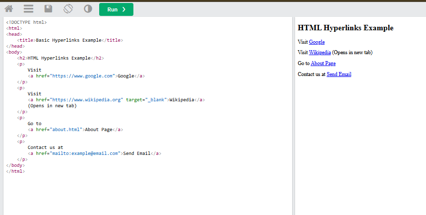

Connecting webpages using anchor tags and navigation links ⋆°.☾
HTML Links, also known as Hyperlinks, are used to connect one web page to another, allowing users to navigate easily between different pages, websites, or sections within the same page.
| Attribute | Description |
|---|---|
| _blank | Opens the linked document in a new window or tab. |
| _self | Opens the linked document in the same frame or window as the link. (Default behavior) |
| _parent | Opens the linked document in the parent frame. |
| _top | Opens the linked document in the full body of the window. |
| framename | Opens the linked document in a specified frame. The frame’s name is specified in the attribute. |

𝜗ৎ Create a clickable gallery that displays your past Performance Tasks in an organized and visually appealing layout. Each item in the gallery should allow users to click and view more details, highlighting your skills, creativity, and accomplishments throughout the academic year.